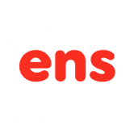 EOS Name Service EOS 名称服务是创建任意长度的自定义 EOS 帐户名称的最简单方法。您只需单击一下即可轻松创建 EOS 帐户名称，例如“rob.vr”或“bank.xyz”。您
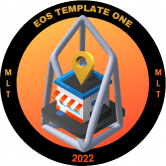 EOS Template One 我们可以改变我们做生意的方式变得更好。如何？通过使用 EOS 和 EOSIO 创建社区货币系统。 第一步是帮助会员创建数字商店，他们可以在其中列出他们的产品或服务
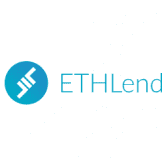 ETHLend 基于区块链的去中心化点对点借贷平台，允许使用您的比特币、以太坊和其他 ERC20 代币作为抵押品。 当 Aave 协议于今年 1 月推出时，论文是想办法解锁 DeFi 中的锁定价
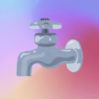 Community Faucet 非官方多链水龙头 由志愿者支持组成，NFT 分发给支持者。 什么是水龙头？它免费为您提供几倍的天然气成本。 就像水龙头里的水一样。 什么是 AStar 社区水龙头
DecentraWeb DecentraWeb 是以太坊区块链上 DNS 基础层协议的去中心化实现，允许用户无需许可地将顶级域 (TLD) 注册为 NFT。 DWEB 价格实时数据 今天的 DecentraWeb 实时价格为 0.188289 美元，24 小时交易
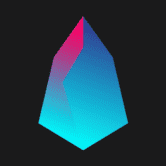 DeFind DeFi 是全球第一家共同去化的 EOS，DEFI 已经上线新的代币交易所，通过 EOS FI 获得 DEFI，DEFI 基金进行升华传播 20% 的收益，持有 DEFI 可以不断进行分
BA.NET Your-Own.BA.net 终生域名！ 使用电子邮件（仅限接收）和网络托管。 再也不用担心更新或丢失您的互联网域名 您的域名是您拥有并可转售的以太坊 NFT BA.net 是一个可以追溯到 1995 年
Bankroll Network Bankroll 是 TRON 和以太坊上首屈一指的去中心化金融网络。 它实现了一个自愿的、可持续的和无需许可的全球经济引擎。 通过金融合约网络，该平台提供 TRX、ETH
$CTV Airdrop Crypto TV (CTV) 是第一个以英语广播的电视网络。将于 2022 年 9 月正式开播。CTV 目前在阿联酋（迪拜）总部拥有强大的员工队伍，包括记者（包括新闻编辑室工作人员
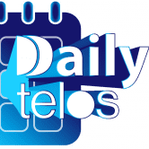 Daily Telos Daily Telos 平台允许在不可变的区块链上发布公告。 每条记录都与一个事务 ID 相关联，并存在于特定的块号内。 一旦记录下来，每日 Telos 公共记录将永远成
Danchor Danchor 是一个基于 EOS 的去中心化 Staking 稳定币项目，支持用户通过 Staking EOS 生成稳定币 USN（1:1 挂钩 USD）。 Danchor是基于EOS的去中心化常规型稳定币
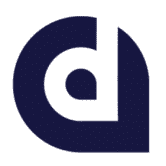 DAPP Network DAPP 网络是一个通用的桥接框架和强大的服务中间件，对于区块链互操作性和现代去中心化应用程序 (dApp) 至关重要。 DAPP Network 的桥接技术可以通过可定制的共识和激励结
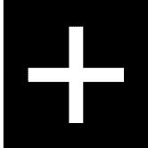 DappBuilder 无需编码即可在几分钟内构建您自己的 DApp 或在您最喜欢的区块链网络上创建一个代币。 将 UI 添加到您的 DApp 并开始使用它，而无需一行代码。 支持多个网络，并且
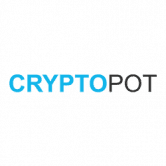 CryptoPot Cryptopot 是一个以太坊在线钱罐平台。安全地创建您的钱罐，邀请合作者并分享它。 CryptoPot 是一个基于以太坊的项目。 dApp 允许您创建钱罐。这些罐子将是私人的，只有您和
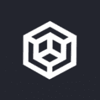 Crypto Multisender 使用 Crypto Multisender 将您的加密货币分发给数十、数百甚至数千名用户。我们以最优惠的价格和免费试用提供我们的服务！不仅如此，我们还提供实时聊天支持，在整个代
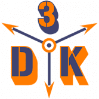 Blenderizer Blenderizer 为您的 NFT 收藏增添了一层新的乐趣。 为您的混合物定义成分，并为您的客户提供惊人的新资产，以换取烧掉旧资产。 借助这个系统，您可以在减少流通中的 NFT
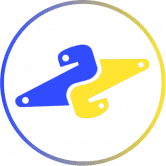 beempy beempy 是一个方便的 CLI 实用程序，可让您管理您的钱包、转移资金、检查余额、帖子等。 该工具可以使用 pip install beem 安装，并且可以通过在终端中键入 beempy 来启动。 使用钱
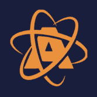 AtomicAssets AtomicAssets 是 eosio 区块链技术上的不可替代代币 (NFT) 的标准。 任何人都可以利用 AtomicAsset 标准来标记和创建数字资产。 NFT 数据和所有权保存在区块链上并且不可变。 用户没有 RAM 成本
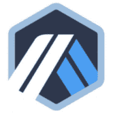 Arbitrum Arbitrum 是一套以太坊扩展解决方案，可实现高吞吐量、低成本的智能合约，同时保持无需信任的安全性。 Arbitrum 具有三种模式：AnyTrust Channels、A
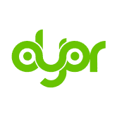 DYOR Audit DYOR 审计团队由非常有才华的人组成，他们有着一劳永逸地清理 Crypto 和 DeFi 空间的独特雄心。 我们的团队包括长期在加密货币领域工作的智能合约开发人员和安全研究